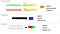

Why backlink other than search engines?

The question is worth asking whether driving internet users to another website than yours why not just drive them to the search engine they come from. That sounds obvious but this is a question worth answering and I put my hand on it and measured and tested it to know the result but I would know if you have once asked yourself this question. If yes what results did you get. it would be great for me to know so if you have your answer please tell me.
Here the schemes of the 3 process used to get the result I have also ask me if you need my results.
